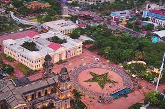

Nicaragua, habitada originalmente por diversos grupos indígenas, fue colonizada por los españoles en el siglo XVI, estableciendo ciudades como Granada y León. Se independizó de España en 1821, se unió brevemente al Imperio Mexicano y luego a la Federación de Centroamérica, y se constituyó como república independiente en 1838. Durante el siglo XX, enfrentó intervenciones estadounidenses y dictaduras autoritarias, especialmente la de la familia Somoza. La Revolución Sandinista de 1979 derrocó a Somoza y estableció un gobierno socialista, pero el país también vivió una guerra civil y conflicto con los contras. Desde la década de 1990, ha experimentado alternancias políticas y desafíos económicos, con Daniel Ortega regresando al poder en 2007 y enfrentando críticas por la erosión de las instituciones democráticas.
SIMBOLOS PATRIOS
Siendo los simbolos patrios de Costa Rica los siguientes:
Bandera de Costa Rica:
Costa Rica ha tenido varias banderas desde 1821 hasta el presente. La bandera tricolor, o sea, la que tiene blanco, azul y rojo, nació en 1848, cuando doña Pacífica Fernández, esposa del presidente de la república en ese entonces, Dr. José Ma. Castro Madriz, recordando los colores de la de Francia, creó con sus propias manos nuestra bandera.
Escudo de Costa Rica:
Costa Rica ha tenido varias banderas desde 1821 hasta el presente. La bandera tricolor, o sea, la que tiene blanco, azul y rojo, nació en 1848, cuando doña Pacífica Fernández, esposa del presidente de la república en ese entonces, Dr. José Ma. Castro Madriz, recordando los colores de la de Francia, creó con sus propias manos nuestra bandera.
Ave nacional de Costa Rica:
Fue decretado símbolo nacional en noviembre de 1976, gracias a un proyecto de don Eliseo Gamboa quien lo consideró importante dentro de nuestro folclor, de nuestra literatura y de nuestra música. Su canto es el que nos anuncia la llegada de las lluvias. El decreto que lo convirtiera en ave nacional fue firmado durante la administración del Lic. Daniel Oduber Quirós.
Flor Nacional de Costa Rica:
En 1939 en Argentina se fundo un jardín llamado el "Jardín de Paz" y le pidieron a los ticos que enviáran su flor nacional para que luciera con las demás flores de los diferentes países. En ese entonces en Costa Rica no había una flor nacional, ninguna había sido escogida como tal. Fue entonces que el Club de Jardínes y el Club Rotario hicieron un concurso para elegir a la que nos representaría de ahí en adelante. Las flores participantes en el concurso debían cumplir algunos requisitos: ser costarricense, originaria de América y estar incorporada a nuestras costumbres; la ganadora resultó ser la orquídea, conocida popularmente como "la guaria morada" cuyo nombre científico es "Cattleya Skinneri". La guaria morada florece en los meses de febrero y marzo. Fue decretada "Flor Nacional" en el gobierno de León Cortés Castro por la Secretaría del Estado en el Despacho de Fomento y Agricultura, por acuerdo No. 24 del 15 de junio de 1939.
Árbol nacional de Costa Rica:
El árbol de guanacaste fue declarado como el árbol nacional de Costa Rica, el 31 de agosto de 1959, durante la administración del Lic. Mario Echandi Jiménez, por decreto No. 7. Fue escogido como homenaje a los guanacastecos, por su anexión a nuestro país de 1825, y además, porque para muchos la inmensa sombra que da este bello árbol, se asemeja a la protección que el Estado nos brinda a todos los costarricenses. Guanacaste viene del idioma indígena náhuatl y en ese lenguaje la palabra "guanacaste" significa árbol de la oreja, porque los frutos del árbol se parecen a las orejas de las personas.
Himno Nacional de Costa Rica
La música del Himno Nacional nació durante el gobierno de Juan Rafael Mora, en 1852, cuando el Presidente de la República le pidió a Manuel María Gutiérrez que hiciera la música y él en tres días lo hizo. Para escoger la letra se realizó un concurso en 1903. El premio lo ganó José María Billo Zeledón, y desde entonces fue la única letra con la que se cantó el himno. fue declarada oficial el 10 de junio de 1949.
Noble patria, tu hermosa bandera
expresión de tu vida nos da;
bajo el límpido azul de tu cielo
blanca y pura descansa la paz.
En la lucha tenaz,
de fecunda labor
que enrojece del hombre la faz,
conquistaron tus hijos
labriegos sencillos
eterno prestigio, estima y honor.
Salve, oh tierra gentil!
Salve, oh madre de amor!
Cuando alguno pretenda
tu gloria manchar,
verás a tu pueblo valiente y viril,
la tosca herramienta en arma trocar.
Salve oh Patria tú pródigo suelo,
dulce abrigo y sustento nos da;
bajo el límpido azul de tu cielo
vivan siempre el trabajo y la paz
EXTENSIÓN TERRITORIAL
Nicaragua, ubicada en Centroamérica, tiene una extensión territorial de aproximadamente 130,373 kilómetros cuadrados, lo que la convierte en el país más grande de la región. Limita al norte con Honduras, al sur con Costa Rica, al este con el mar Caribe y al oeste con el océano Pacífico. Su geografía incluye una variedad de paisajes, desde montañas y volcanes hasta lagos y costas.
DEPARTAMENTOS
Nicaragua está dividida en 15 departamentos y 2 regiones autónomas:
Listas de departamentos:
Boaco
Carazo
Chinandega
Chontales
Estelí
Granada
Jinotega
León
Madriz
Managua (la capital del país)
Masaya
Matagalpa
Rivas
Rio San Juan
Las dos regiones autónomas son:
Región Autónoma de la Costa Caribe Norte
Región Autónoma de la Costa Caribe Sur
LUGARES TURISTICOS
Siendo un pais pequeño, en sus territorios se encuentran grandes atractivos turisticos, con una gran variedad de actividades, como lo serian:
Lago de Cocibolca
El lago Cocibolca o Gran Lago de Nicaragua es un lago de agua dulce situado en Nicaragua. Tiene una extensión de 8264 km², siendo el mayor de América Central. Tiene en su interior más de 400 isletas, tres islas y dos volcanes, también es el único lugar que alberga tiburones de agua dulce.
Volcán Mombacho
El Mombacho es un volcán en Nicaragua, cerca de la ciudad de Granada, dentro del parque nacional Volcán Mombacho. Tiene una altura de 1345 m s. n. m. Alberga una de las últimas zonas de selva tropical de Nicaragua, y contiene flora y fauna únicos. Se ha declarado Reserva Natural.
Managua: La capital del país

Managua se ubica en la costa sur del lago de Managua y es la capital de Nicaragua. Su catedral, solo el exterior desde un terremoto de 1972, se ubica en la Plaza de la Revolución